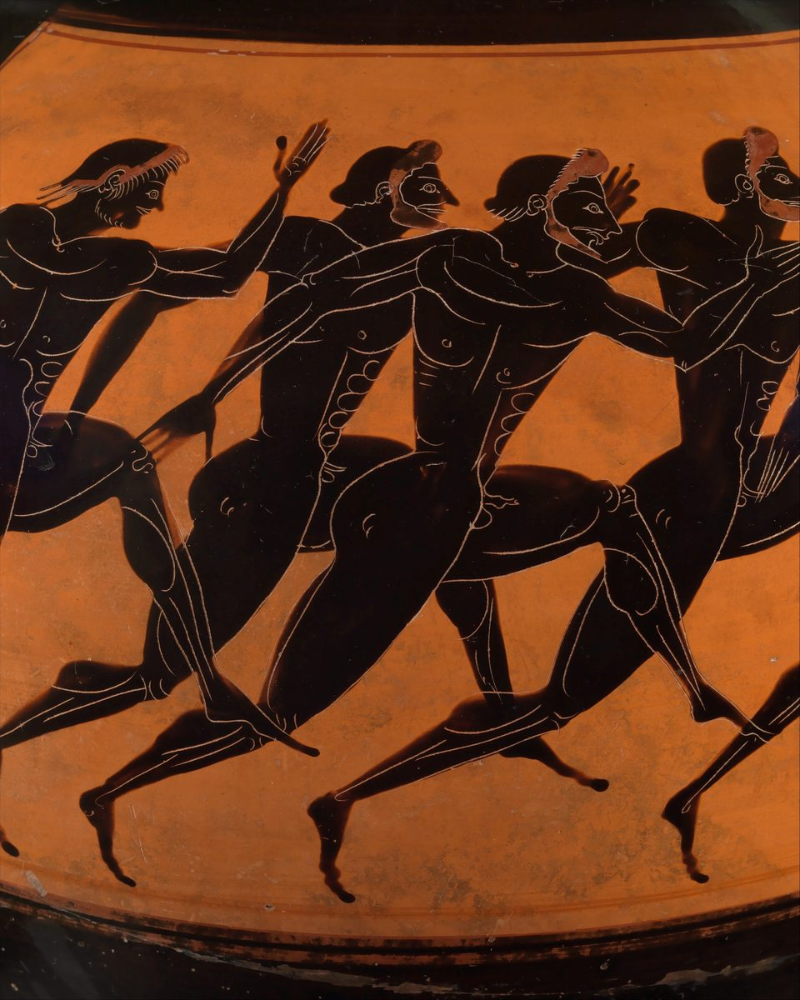

Philippians 3 — The Mister Translation

⚠ Runners in the stadium race, painted on a jar of the kind filled with olive oil and given as a prize at the games of Athens. ‘I pursue toward the goal, for the prize’ (verse 14): Paul’s brabeion is the victor’s reward.

Translator’s Notes
⚠ “Finally, my brothers, rejoice in the Lord.” To loipon is “finally” or “for the rest,” and two chapters follow it. The sharp turn at v2 has led a number of scholars to argue that the letter as we have it joins two or three letters of Paul to Philippi; others read one letter that changes its subject. This page reports both and does not choose. “Rejoice in the Lord” returns at Philippians 4:4. The KJV reads “Finally, my brethren, rejoice in the Lord”; the NIV reads “Further, my brothers and sisters”; the Douay reads “As to the rest, my brethren.”
⚠ “Watch out for the dogs … watch out for the mutilation.” Three times blepete, “watch out.” Kyōn, “dog,” stands in five verses of the New Testament, among them Matthew 7:6, Luke 16:21 and Revelation 22:15, “Outside are the dogs” (dictionary); it is not the “little dogs” of Mark 7:27. Katatomē, “mutilation,” stands in one verse, this one, and it is a pun on peritomē, “circumcision”: a cutting-up for a cutting-around (dictionary). Galatians 5:12, “would even castrate themselves,” is the same kind of bitter wordplay. Who is meant, readers answer in different ways; most take them to be teachers who would have gentile believers circumcised, and whether they had reached Philippi the verse does not say. The KJV reads “Beware of dogs, beware of evil workers, beware of the concision”; the NWT 1984 reads “look out for those who mutilate the flesh”; the TLB adds “who say you must be circumcised to be saved,” words the Greek does not have.
⚠ How this verse has been used. In the first of his homilies Against the Jews, preached at Antioch in 386–387, John Chrysostom quoted “Beware of the dogs, beware of the evil workers, beware of the mutilation” as Paul’s word about the Jews, and argued that the Jews, once children, had become dogs. That use is part of the record of Christian hostility to Jews. The verse does not speak of the Jewish people: Paul, who in the next lines calls himself “a Hebrew of Hebrews,” is warning a congregation of gentiles about particular teachers. A common explanation, that Jews of the time called gentiles “dogs” and that Paul turns the insult back, is reported to be questioned by recent scholars, who find little ancient evidence for it. This page reports both readings and does not choose.
“We are the circumcision, who serve by the Spirit of God and boast in Christ Jesus.” Circumcision is claimed for those who have it inwardly, as at Romans 2:29, “circumcision is that of the heart, by spirit, not by letter.” Latreuō is the “serve” of Romans 1:9 (dictionary). Kauchaomai, “boast” (dictionary), recalls 1 Corinthians 1:31, “Let the one who boasts, boast in Jehovah.” “The flesh” is the sarx of the cut (dictionary). The KJV, from a text that makes God the object, reads “which worship God in the spirit, and rejoice in Christ Jesus”; the ASV reads “who worship by the Spirit of God, and glory in Christ Jesus”; the NWT 1984 reads “those with the real circumcision,” adding “real.”
“Circumcised on the eighth day … of the tribe of Benjamin, a Hebrew of Hebrews.” Oktaēmeros, “eighth-day,” stands in one verse of the New Testament; it is the day the law sets, Genesis 17:12 and Leviticus 12:3, “on the eighth day the flesh of his foreskin shall be circumcised.” “Of the tribe of Benjamin” is said again at Romans 11:1 (encyclopedia), and Israel’s first king, Saul, whose name Paul bore, was “a man of the tribe of Benjamin” (Acts 13:21). “A Hebrew of Hebrews” is read as a Hebrew-speaking family or as unmixed descent; compare 2 Corinthians 11:22, “Are they Hebrews? So am I.” The KJV reads “an Hebrew of the Hebrews”; the NWT 1984 reads “a Hebrew [born] from Hebrews”; the TLB reads “So I was a real Jew if there ever was one!”
“A Pharisee … persecuting the congregation … become blameless.” “I am a Pharisee, a son of Pharisees,” he says at Acts 23:6 (encyclopedia), and at Galatians 1:13 he recalls that he “was persecuting the congregation of God.” Zeal heads the list, as at Galatians 1:14, “far more zealous for the traditions of my fathers.” Amemptos, “blameless,” is the word of Philippians 2:15. Readers differ on how this sits beside Romans 7: some read a record kept without fault by the law’s own measure, others an estimate of himself that Paul now counts as loss. The KJV reads “Concerning zeal, persecuting the church; touching the righteousness which is in the law, blameless”; the ASV reads “found blameless”; the Douay reads “conversing without blame.”
“Whatever things were gains to me, these I have counted loss.” Kerdos, “gain,” is the word of Philippians 1:21, “to die is gain.” Zēmia, “loss,” stands in four verses of the New Testament: Acts 27:10 and Acts 27:21, the loss of a ship and its cargo, and the two here. “Counted” is hēgeomai, the verb of Philippians 2:3, “counting one another as surpassing yourselves,” and of Philippians 2:6, where Christ “did not count” equality with God a thing to be grasped; Paul now counts as Christ counted. The KJV reads “those I counted loss for Christ”; the NIV reads “I now consider loss for the sake of Christ.”
⚠ “I count them refuse.” Skybalon stands in one verse of the New Testament, this one, and its sense is argued: scraps thrown to the dogs, rubbish, or dung (dictionary). “The surpassing worth” is the “surpassing” of Philippians 4:7. The KJV reads “and do count them but dung”; the ASV reads “and do count them but refuse”; the NIV reads “I consider them garbage”; the NWT 1984 reads “as a lot of refuse.”
⚠ “Through faith in Christ, the righteousness from God that rests on faith.” Pistis Christou can be “faith in Christ” or “the faithfulness of Christ,” the same question as at Galatians 2:16, and this translation prints “faith in Christ” as it does there and at Romans 3:22, with the other reading noted. “A righteousness of my own” is the opposite of “God’s righteousness,” as at Romans 10:3, “seeking to establish their own” (dictionary). The KJV reads “but that which is through the faith of Christ”; the ASV reads “but that which is through faith in Christ”; the Douay reads “but that which is of the faith of Christ Jesus.”
⚠ “Formed with his death … the resurrection from among the dead.” Koinōnia is the “partnership” of Philippians 1:5, now of sufferings (dictionary). Symmorph-, “formed with,” stands in three verses: Romans 8:29, “formed with the image of his Son,” and two in this chapter, v10 and v21 (dictionary); its root is the morphē, “form,” of 2:6–7. Exanastasis stands in one verse: a resurrection out, from among the dead (dictionary). “If somehow” is read as doubt or as humility. The KJV reads “the resurrection of the dead”; the ASV reads “the resurrection from the dead”; the NWT 1984 reads “the earlier resurrection from the dead,” adding “earlier,” a rendering that fits the Witnesses’ teaching of a first resurrection for a heavenly class.
⚠ “Not that I have already been made perfect … as many as are mature.” Teleioō, “to make perfect, to bring to the end” (dictionary), and in v15 teleios, “mature,” the word of 1 Corinthians 2:6 and Ephesians 4:13 (dictionary), share a root: Paul denies that he has been perfected, and then speaks to “as many as are mature.” Some readers hear irony at people who claimed perfection; others a plain call to the grown-up. This page reports both. The KJV reads “either were already perfect”; the NIV reads “or have already arrived at my goal”; the NWT 1984 reads “or am already made perfect.”
“I pursue it … because I too was laid hold of by Christ.” Diōkō, “pursue,” is the verb of v6, “persecuting the congregation”: the same drive, turned the other way. Katalambanō, “lay hold of,” comes three times in two verses. Eph’ hō is read “because” or “that for which.” The text printed here reads “by Christ”; Westcott–Hort and Nestle–Aland read “by Christ Jesus,” and so the ASV: “that for which also I was laid hold on by Christ Jesus”; the KJV reads “if that I may apprehend that for which also I am apprehended of Christ Jesus.” At v13 Westcott–Hort reads “not yet,” and so the NIV: “I do not consider myself yet to have taken hold of it.”
“Stretching out toward the things ahead … the prize of the upward call.” Epekteinomai, to stretch out over, the runner leaning to the line, stands in one verse of the New Testament. Brabeion, “prize,” stands in two verses: 1 Corinthians 9:24, “only one receives the prize,” and this one (dictionary). “The upward call” is read as the call that comes from above or the call to come up; the Greek allows both. The KJV reads “for the prize of the high calling of God in Christ Jesus”; the NWT 1984 reads “the prize of the upward call of God”; the NIV reads “for which God has called me heavenward.”
“Let us walk in line with that same thing.” Stoicheō is the “walk in line” of Galatians 5:25 and Galatians 6:16, “as many as will walk in line with this rule” (dictionary). The Byzantine text adds “by the same rule, to be of the same mind,” and so the KJV: “let us walk by the same rule, let us mind the same thing”; the NIV reads “Only let us live up to what we have already attained.”
“Become fellow imitators of me … as you have us as a pattern.” Symmimētēs, “fellow imitator,” stands in one verse of the New Testament; mimētēs is the “imitator” of 1 Corinthians 11:1, “Become imitators of me, just as I also am of Christ” (dictionary). Typos is a pattern, the mark a blow leaves (dictionary). “Keep your eyes on” is skopeō, the “looking to” of Philippians 2:4, from the root of skopos, “goal,” in v14. The KJV reads “be followers together of me”; the ASV reads “be ye imitators together of me”; the NWT 1984 reads “Unitedly become imitators of me.”
⚠ “Enemies of the cross of Christ … whose god is the belly.” Who they are is argued: the circumcision party of v2, whose “belly” would be food laws and whose “shame” the circumcised body, as some read it; or people who live for appetite, as at Romans 16:18, “they do not serve our Lord Christ but their own bellies.” This page does not choose. Apōleia, “destruction,” is the word of Philippians 1:28 (dictionary); “set their minds” is phroneō, the verb of 2:2 and 2:5. The KJV reads “whose God is their belly”; the NIV reads “their god is their stomach”; the NWT 1984 reads “the enemies of the torture stake of the Christ,” a doctrinal rendering (dictionary).
“Our citizenship is in the heavens.” Politeuma, “citizenship” or “commonwealth,” stands in one verse of the New Testament (dictionary); its verb is the “live out your citizenship” of Philippians 1:27 (dictionary). Philippi was “a colony” (Acts 16:12), a Roman city far from Rome, and the readers knew what it was to belong to a city elsewhere. “We are waiting for” is apekdechomai, the verb of Romans 8:23, “waiting for adoption, the redemption of our body”; sōtēr is “Savior” (dictionary). The KJV reads “For our conversation is in heaven”; the ASV reads “For our citizenship is in heaven”; the TLB reads “But our homeland is in heaven.”
“Change the outward form of the body of our humiliation, to be formed with the body of his glory.” The two words of the hymn come back together. Metaschēmatizō is to change the schēma, the “outward form” of Philippians 2:7; at 2 Corinthians 11:13 the same verb is a disguise, here a real change (dictionary). Symmorphos, “formed with,” carries the morphē of 2:6–7. Tapeinōsis, “humiliation,” is the noun of 2:8, “he humbled himself,” and the “low estate” of Luke 1:48 (dictionary). “To subject all things” recalls the psalm Paul quotes at 1 Corinthians 15:27, “he has put all things under his feet.” The KJV reads “Who shall change our vile body”; the ASV reads “who shall fashion anew the body of our humiliation”; the Douay reads “the body of our lowness.”
Patterns worth carrying forward
Where this translation keeps the exact words: “the mutilation” beside “the circumcision,” to keep the pun; “serve,” as at Romans 1:9; “boast,” as at 1 Corinthians 1:31; “blameless,” as at 2:15; “gain,” as at 1:21; “loss,” as at Acts 27:10; “counted,” as at 2:3 and 2:6; “surpassing,” as at 4:7; “faith in Christ,” as at Galatians 2:16; “partnership,” as at 1:5; “formed with,” as at Romans 8:29; “pursue” for the verb of “persecuting”; “mature,” as at 1 Corinthians 2:6; “prize,” as at 1 Corinthians 9:24; “walk in line,” as at Galatians 6:16; “citizenship,” as at 1:27; “outward form” and “humiliation,” as at 2:7 and 2:8.
Echoes paid. Rejoice, again; counting from Philippians 2:3 and Philippians 2:6; gain from Philippians 1:21; blameless from Philippians 2:15; partnership from Philippians 1:5; form, outward form and humbled from Philippians 2:7 and Philippians 2:8, now said of our bodies; citizenship from Philippians 1:27; Benjamin from Romans 11:1; the persecutor of Galatians 1:13; the prize of 1 Corinthians 9:24; and walking in line from Galatians 6:16.
Echoes planted. “Rejoice in the Lord” again at Philippians 4:4; “the same mind” for Euodia and Syntyche at Philippians 4:2; and “what you also learned and received and heard and saw in me” at Philippians 4:9, the pattern of 3:17 put into practice.
Next in this book: Philippians 4, already on these pages.